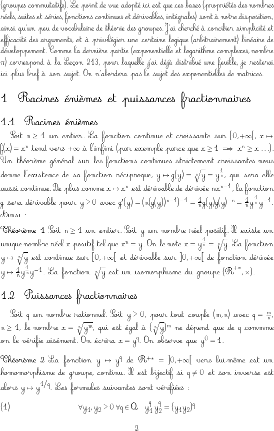

Last revision of the contents of this page: 20 October 2012.
Be patient, the page with all its embedded png images weighs about 5 MB...
A LaTeX package: mathastext
Copyright © 2011-2015 Jean-François B..
mathastext is a package to allow to use the text font also in
mathematics mode, thus giving a very unified look to the produced document.
As a side-effect it alleviates somewhat the problem of the scarcity of free
math fonts for TeX typesetting . . . (back to mathastext.html).
Download from a CTAN
location
All fonts(1) are freely available
(the LaTeX Font Catalogue is a
very useful resource), most of them being already included in the standard TeX
distributions or downloadable as ready-made packages from CTAN. In one
instance (Vollkorn)
the fonts were available as ttf files, and were installed for LaTeX using
the otfinst
script.
(1) most of the xelatex's examples are with fonts provided with the system on a
mac os x machine, some use opentype fonts included in the TeXLive distribution,
and two examples use opentype fonts bundled inside a freely distributed PDF
viewer.
The examples numbered 42-52 illustrate the italic option of the
package. However, when using italic letters in math mode, their protruding
characteristics (most notable in the case of the letter `f') often lead to
overlapping problems with delimiters or other symbols (the math italic fonts
reestablish sufficient kerning around letters compared to text italic). This is
one reason why most examples here are with upright letters. The other reason
being that the author believes that using upright letters in math mode is
esthetically more pleasing.(2) There is no reason to have such a
contrast as has been practiced in scientific typography (and re-inforced as the
"no way to do otherwise" de facto default for the TeX users of the last three
decades) between the text and the formulas, because the text is a formula in its
own right (and vice versa). And this remark is particularly valid for the italic
shape, whose application is inconsistent (to the point that there are battles of
«experts» about whether the `d' in `dx' should be upright or slanted, that the
`x' is slanted is anyhow accepted as a definitive axiom.)
(2) it seems that it is only during the last few years, as a result of the
widespread use of the beamer package that scientific users of TeX have
discovered that math could be displayed in other fonts than the defaults, in
that case in sans serif! (but again they now all use the same fonts...)
Regarding the large mathematical symbols (sums, products, integrals), nothing
is done by the package. The examples in this page are either with the
default Computer Modern fonts, or the Fourier-GUTenberg fonts, or the PX/TX
fonts. In alphabetical order, some of the packages (that I have either looked at
or heard about) providing access to math fonts (either alongside text fonts, or
designed to match a pre-existing typeface): anttor, arev, ccfonts, cmbright,
concmath, fourier, iwona, kpfonts, kurier, mathdesign (garamond, charter,
utopia), mathpazo, mathtime, mathptmx, mbtimes, ncfourier, newtx, pxfonts,
txfonts,... The differences for some among these packages are
not in the math symbols but only in the (Greek and Latin) letters in math mode.
Some links:
Go to the bottom for a (partial!) discussion
of Greek letters, as have been used on the present page.
The XeTeX examples are provided just to show that mathastext is
Unicode compatible, but let's recall that it is only concerned with a tiny
Basic Latin subrange of the Unicode glyphs; mathspec
and unicode-math are packages specially tailored to Unicode and you
should look at them first.
mathastext can accomodate many math-as-text fonts in the same
document. This is illustrated by this (very
special...) example. The preamble of
the LaTeX source is here.
Regarding this web page: the png images were converted from dvi files with
the help of dvipng (it turns out the outcome is at 100dpi, so they will show
in your browser at their real size only if your screen device has a 100dpi
resolution), and from pdf files with gs (with -r500 -dDownScaleFactor=5 to get
100 pixels per inch of the original contents). The pdf files in the middle
column above were produced via latex+dvipdfmx (some with latex+dvips+gs), or
via xelatex. Earlier, most had been done via pdflatex (probably because it had
been easier for me to do pdflatex rather than latex+dvips+gs simultaneously on
dozens of files), but on 2012/10/07, I re-did them with dvipdfmx, which gave
impressive size gains (indeed dvipdfmx has a compressed embedding of fonts):
typically a ratio of 1 to 4, and in the case of Libertine/Biolinum, an
improvement of 1 to 10! as the fonts may have changed, I re-did a pdflatex to
double-check. In some cases, the pdf viewer complained of not being able to
display the embedded font glyphs and I had to do dvips+gs in those cases
rather than dvipdfmx.
In the first few images below, the symbols which do not match the other
letters are not from the text font (mathastext does nothing for things
such as \partial or \nabla or \ell or \wp). Everything following the math
excerpt (the abc...z ABC...Z line for example) is typeset in math mode.
The digits are in the .tex file given as $0\,1\,2\,3\,4\,5\,6\,7\,8\,9$, hence
the spacings. In some instances the ``no dot j'' is absent from the font and
appears as a black rectangle.
Latin Modern Typewriter
Proportional
This example uses:
\usepackage[T1]{fontenc}
\usepackage[variablett]{lmodern}
\renewcommand{\rmdefault}{\ttdefault}
\usepackage[LGRgreek]{mathastext}
\MTgreekfont{lmtt} % no lgr lmvtt, so use lgr lmtt
\Mathastext
\let\varepsilon\epsilon % only \varsigma in LGR
Typeset with mathastext 1.15c
(2012/10/05).
pdf Note for experts:
t1lmvtt.fd has some typos affecting the `light' series in italic shape and the
`semi-bold' series (last checked 2012/10/07).

|
In the next image, one uses for the text the `light' variant
(option `lighttt'
of package lmodern, but see the `note to
experts' above)
and the math mode uses the semi-bold series of
lmvtt. |
|
|
Fourier Utopia (Fourier
upright Greek)
This example uses:
\usepackage[T1]{fontenc}
\usepackage[upright]{fourier}
\usepackage{mathastext}
Typeset with mathastext 1.12b (2011/02/09).
pdf
Droid Serif
This example uses:
\usepackage[T1]{fontenc}
\usepackage[default]{droidserif}
\usepackage[LGRgreek]{mathastext}
\let\varepsilon\epsilon
Typeset with mathastext 1.13 (2011/03/11).
pdf
Droid Sans
This example uses:
\usepackage[T1]{fontenc}
\usepackage[default]{droidsans}
\usepackage[LGRgreek]{mathastext}
\let\varepsilon\epsilon
Typeset with mathastext 1.13 (2011/03/11).
pdf
New Century Schoolbook
(Symbol Greek)
This example uses:
\usepackage[T1]{fontenc}
\usepackage{newcent}
\usepackage[symbolgreek]{mathastext}
\linespread{1.1}
Typeset with mathastext 1.12b (2011/02/09).
pdf
French Cursive (Euler Greek)
Note
that there are no plus, no equal and no asterisk signs. The following warning
seems to be obsolete with the latest version of the font (quickly tested
2012/12/30).
Obsolete warning: when mathastext is used with French
Cursive, certain isolated letters, like the f in the example below will not
display correctly in math mode. This is particularly notable on the letters r
and s, which become barely legible. This happens for letters at the beginning
of a word: in $rs$, s will be ok, but not r. If you really want to
use mathastext with French Cursive, try to avoid r and s in math
mode. If you absolutely need to use these letters at a few spots in your
document, you can type \text{r} or rather \text{rs} in the example above (this
requires
amstext (or amsmath)). Also, note
that there are no plus, no equal and no asterisk signs (at least in my copy of
the fonts).
This example uses:
\usepackage[T1]{fontenc}
\usepackage[default]{frcursive}
\usepackage[eulergreek,noplusnominus,noequal,nohbar,%
nolessnomore,noasterisk]{mathastext}
Typeset with mathastext 1.12b
(2011/02/09).
pdf
 |
|  |
Auriocus Kalligraphicus
(Symbol Greek)
This example uses:
\usepackage[T1]{fontenc}
\usepackage{aurical}
\renewcommand{\rmdefault}{AuriocusKalligraphicus}
\usepackage[symbolgreek]{mathastext}
Typeset with mathastext 1.12b (2011/02/09).
pdf
ECF Skeetch (CM Greek)
This example uses:
\usepackage[T1]{fontenc}
\DeclareFontFamily{T1}{fsk}{}
\DeclareFontShape{T1}{fsk}{m}{n}{<->s*[1.315] fskmw8t}{}
\renewcommand\rmdefault{fsk}
\usepackage[noendash,defaultmathsizes,nohbar,defaultimath]{mathastext}
Typeset with mathastext 1.12b (2011/02/09).
pdf
URW Avant Garde (Symbol Greek)
This example uses:
\usepackage[T1]{fontenc}
\usepackage{avant}
\renewcommand{\familydefault}{\sfdefault}
\usepackage[symbolgreek,defaultmathsizes]{mathastext}
Typeset with mathastext 1.12b (2011/02/09).
pdf
URW Zapf Chancery (CM Greek)
This example uses:
\usepackage[T1]{fontenc}
\DeclareFontFamily{T1}{pzc}{}
\DeclareFontShape{T1}{pzc}{mb}{it}{<->s*[1.2] pzcmi8t}{}
\DeclareFontShape{T1}{pzc}{m}{it}{<->ssub * pzc/mb/it}{}
\DeclareFontShape{T1}{pzc}{mb}{sl}{<->ssub * pzc/mb/it}{}
\DeclareFontShape{T1}{pzc}{m}{sl}{<->ssub * pzc/mb/sl}{}
\DeclareFontShape{T1}{pzc}{m}{n}{<->ssub * pzc/mb/it}{}
\usepackage{chancery}
\usepackage{mathastext}
\linespread{1.05}
\begin{document}\boldmath
Typeset with mathastext 1.12b (2011/02/09).
pdf
GFS Bodoni
This example uses:
\usepackage[T1]{fontenc}
\renewcommand{\rmdefault}{bodoni}
\usepackage[LGRgreek]{mathastext}
\let\varphi\phi
\linespread{1.06}
Typeset with mathastext 1.14c (2011/04/04).
pdf
Palatino (Symbol Greek)
This example uses Palatino (URW++ Palladio) for text and math, and
Symbol for the Greek letters and various mathematical symbols. The large
mathematical symbols are the default ones.
\usepackage[T1]{fontenc}
\usepackage{palatino}
\usepackage[symbolmax,defaultmathsizes]{mathastext}
Typeset with mathastext 1.13b (2011/03/15).
pdf
New Century Schoolbook (Symbol Greek, PX math symbols)
This example uses New Century SchoolBook for the Latin
letters and punctuation characters in text and math, Symbol for the Greek
letters, and PX Fonts for the mathematical symbols.
\usepackage[T1]{fontenc}
\usepackage{pxfonts}
\usepackage{newcent}
\usepackage[symbolgreek,defaultmathsizes]{mathastext}
\linespread{1.06}
Typeset with mathastext 1.13b (2011/03/15).
pdf
Epigrafica
This example uses Epigrafica for Latin and Greek letters. The math symbols are
from the PX fonts (epigrafica loads the pxfonts package).
\usepackage[LGR,OT1]{fontenc}
\usepackage{epigrafica}
\usepackage[basic,LGRgreek,defaultmathsizes]{mathastext}
\let\varphi\phi
\linespread{1.2}
Typeset with mathastext 1.15c (2012/10/05).
pdf
GFS NeoHellenic
This example uses:
\usepackage[T1]{fontenc}
\renewcommand{\rmdefault}{neohellenic}
\usepackage[LGRgreek]{mathastext}
\let\varphi\phi
\linespread{1.06}
Typeset with mathastext 1.13 (2011/03/11).
pdf
Comfortaa
This example uses:
\usepackage[default]{comfortaa}
\usepackage[LGRgreek,defaultmathsizes,noasterisk]{mathastext}
\let\varphi\phi
\linespread{1.06}
Typeset with mathastext 1.13 (2011/03/11).
pdf
SliTeX (Euler Greek)
This example uses:
\usepackage[T1]{fontenc}
\usepackage{tpslifonts}
\usepackage[eulergreek,defaultmathsizes]{mathastext}
\MTEulerScale{1.06}
\linespread{1.2}
Typeset with mathastext 1.13 (2011/03/11).
pdf
Antykwa Półtawskiego (TX Fonts for Greek and math symbols)
This example uses:
\usepackage[OT4,OT1]{fontenc}
\usepackage{txfonts}
\usepackage[upright]{txgreeks}
\usepackage{antpolt}
\usepackage[defaultmathsizes,nolessnomore]{mathastext}
Typeset with mathastext 1.13b (2011/03/15).
pdf
Baskervald ADF with Fourier
This example uses:
\usepackage[upright]{fourier}
\usepackage{baskervald}
\usepackage[defaultmathsizes,noasterisk]{mathastext}
Typeset with mathastext 1.13 (2011/03/11).
pdf
Libertine
This example uses:
\usepackage[T1]{fontenc}
\usepackage{libertine}
\usepackage[greek=n]{libgreek}
\usepackage[noasterisk,defaultmathsizes]{mathastext}
Typeset with mathastext 1.13 (2011/03/11).
pdf
Biolinum
This example uses:
\usepackage[T1]{fontenc}
\usepackage{libertine}
\renewcommand{\familydefault}{\sfdefault}
\usepackage[greek=n,biolinum]{libgreek}
\usepackage[noasterisk,defaultmathsizes]{mathastext}
Typeset with mathastext 1.13 (2011/03/11).
pdf
Minion Pro and Myriad Pro (and TX fonts symbols)
This example uses Minion Pro for text, Myriad Pro for math, and TX fonts
for math symbols (Greek inclusive).
\usepackage{txfonts}
\usepackage[upright]{txgreeks}
\usepackage[no-math]{fontspec}
\setmainfont[Mapping=tex-text]{Minion Pro}
\setsansfont[Mapping=tex-text,Scale=MatchUppercase]{Myriad Pro}
\renewcommand\familydefault\sfdefault
\usepackage[defaultmathsizes]{mathastext}
\renewcommand\familydefault\rmdefault
Typeset with mathastext 1.15d
(2012/10/13).
pdf
(compiled with XeLaTeX)
Minion Pro (and TX fonts symbols)
This example uses Minion Pro and TX fonts
for math symbols.
\usepackage{txfonts}
\usepackage[no-math]{fontspec}
\setmainfont[Mapping=tex-text]{Minion Pro}
\usepackage[defaultmathsizes]{mathastext}
Typeset with mathastext 1.15d
(2012/10/13).
pdf
(compiled with XeLaTeX)
GNU FreeSerif and FreeSans
This example is set up in GNU FreeFont Serif for the text, GNU
FreeFont Sans for the letters in math mode, Latin Modern Sans for the Greek
letters, and Computer Modern for the large symbols and delimiters.
\usepackage[no-math]{fontspec}
\setmainfont[ExternalLocation,
Mapping=tex-text,
BoldFont=FreeSerifBold,
ItalicFont=FreeSerifItalic,
BoldItalicFont=FreeSerifBoldItalic]{FreeSerif}
\setsansfont[ExternalLocation,
Mapping=tex-text,
BoldFont=FreeSansBold,
ItalicFont=FreeSansOblique,
BoldItalicFont=FreeSansBoldOblique,
Scale=MatchLowercase]{FreeSans}
\renewcommand{\familydefault}{lmss}
\usepackage[LGRgreek,defaultmathsizes,noasterisk]{mathastext}
\renewcommand{\familydefault}{\sfdefault}
\Mathastext
\let\varphi\phi % no `var' phi in LGR encoding
\renewcommand{\familydefault}{\rmdefault}
Typeset with mathastext 1.15d
(2012/10/13).
pdf
(compiled with XeLaTeX)
GNU FreeSerif (and TX fonts symbols)
This example is set up in GNU FreeFont Serif with TX fonts
symbols and delimiters.
\usepackage[no-math]{fontspec}
\usepackage{txfonts} %\let\mathbb=\varmathbb
\setmainfont[ExternalLocation,
Mapping=tex-text,
BoldFont=FreeSerifBold,
ItalicFont=FreeSerifItalic,
BoldItalicFont=FreeSerifBoldItalic]{FreeSerif}
\usepackage[defaultmathsizes]{mathastext}
Typeset with mathastext 1.15d
(2012/10/13).
pdf
(compiled with XeLaTeX)
Libris ADF with Fourier
This example uses:
\usepackage[T1]{fontenc}
\usepackage[upright]{fourier}
\usepackage{libris}
\renewcommand{\familydefault}{\sfdefault}
\usepackage[noasterisk]{mathastext}
Typeset with mathastext 1.13 (2011/03/11).
pdf
Vollkorn (TX fonts for Greek and math symbols)
This example uses Vollkorn for the Latin letters and punctuation
characters in text and math, and the TX fonts for the Greek letters (in
upright shape) and the mathematical symbols.
\usepackage[T1]{fontenc}
\usepackage{txfonts}
\usepackage[upright]{txgreeks}
\usepackage{vollkorn}
\usepackage[defaultmathsizes]{mathastext}
Typeset with mathastext 1.13b (2011/03/15).
pdf
BrushScriptX-Italic (PX math and Greek)
This example uses BrushScriptX-Italic for Latin letters in text and
math, and PX Fonts for math symbols and Greek letters.
\usepackage[T1]{fontenc}
\usepackage{pxfonts}
%\usepackage{pbsi}
\renewcommand{\rmdefault}{pbsi}
\renewcommand{\mddefault}{xl}
\renewcommand{\bfdefault}{xl}
\usepackage[defaultmathsizes,noasterisk]{mathastext}
\begin{document}\boldmath
Typeset with mathastext 1.13 (2011/03/11).
pdf
ECF Tall Paul (with Symbol font)
This example is set up in ECF Tall Paul (with Symbol font).
\DeclareFontFamily{T1}{ftp}{}
\DeclareFontShape{T1}{ftp}{m}{n}{
<->s*[1.4] ftpmw8t
}{} % increase size by factor 1.4
\renewcommand\familydefault{ftp} % emerald package
\usepackage[symbol]{mathastext}
\let\infty\inftypsy
Typeset with mathastext 1.15d (2012/10/13).
pdf
ECF Augie (Euler Greek)
This example is set up in ECF Augie.
It uses:
\renewcommand\familydefault{fau} % emerald package
\usepackage[defaultmathsizes,eulergreek]{mathastext}
Typeset with mathastext 1.15c (2012/10/05).
pdf
ECF JD (with TX fonts)
This example is set up in ECF JD (with bold TX fonts). It uses:
\usepackage{txfonts}
\usepackage[upright]{txgreeks}
\renewcommand\familydefault{fjd} % emerald package
\usepackage{mathastext}
\begin{document}\mathversion{bold}
Typeset with mathastext 1.15c (2012/10/05).
pdf
ECF Webster (with TX fonts)
This example is set up in ECF Webster (with bold TX fonts). It uses:
\usepackage{txfonts}
\usepackage[upright]{txgreeks}
\renewcommand\familydefault{fwb} % emerald package
\usepackage{mathastext}
\renewcommand{\int}{\intop\limits}
\linespread{1.5}
\begin{document}\mathversion{bold}
Typeset with mathastext 1.15c (2012/10/05).
pdf
Comic Sans MS
This example uses:
\usepackage[no-math]{fontspec}
\setmainfont[Mapping=tex-text]{Comic Sans MS}
\usepackage[defaultmathsizes]{mathastext}
Typeset with mathastext 1.15d (2012/10/13).
pdf
(compiled with XeLaTeX on Mac OS X; png images produced with gs)
Electrum ADF (CM Greek)
This example uses:
\usepackage[T1]{fontenc}
\usepackage[LGRgreek,basic,defaultmathsizes]{mathastext}
\usepackage[lf]{electrum}
\Mathastext
\let\varphi\phi
Typeset with mathastext 1.15b (2012/09/27).
pdf
American Typewriter
This example uses:
\usepackage[no-math]{fontspec}
\setmainfont[Mapping=tex-text]{American Typewriter}
\usepackage[defaultmathsizes]{mathastext}
Typeset with mathastext 1.15d
(2012/10/13).
pdf
(compiled with XeLaTeX)
Papyrus
This example uses:
\usepackage[no-math]{fontspec}
\setmainfont[Mapping=tex-text]{Papyrus}
\usepackage[defaultmathsizes]{mathastext}
Typeset with mathastext 1.15d
(2012/10/13).
pdf
(compiled with XeLaTeX)
Noteworthy Light
This example uses:
\usepackage[no-math]{fontspec}
\setmainfont[Mapping=tex-text]{Noteworthy Light}
\usepackage[defaultmathsizes]{mathastext}
Typeset with mathastext 1.15d
(2012/10/13).
pdf
(compiled with XeLaTeX)
Chalkboard SE
This example uses:
\usepackage[no-math]{fontspec}
\setmainfont[Mapping=tex-text]{Chalkboard SE}
\usepackage[defaultmathsizes]{mathastext}
Typeset with mathastext 1.15d
(2012/10/13).
pdf
(compiled with XeLaTeX)
Chalkduster
This example uses:
\usepackage[no-math]{fontspec}
\setmainfont[Mapping=tex-text]{Chalkduster}
\usepackage[defaultmathsizes]{mathastext}
Typeset with mathastext 1.15d
(2012/10/13).
pdf
(compiled with XeLaTeX)
Apple Chancery
This example uses:
\usepackage[no-math]{fontspec}
\setmainfont[Mapping=tex-text]{Apple Chancery}
\usepackage[defaultmathsizes]{mathastext}
Typeset with mathastext 1.15d
(2012/10/13).
pdf
(compiled with XeLaTeX)
Zapf Chancery
This example uses:
\DeclareFontFamily{T1}{pzc}{}
\DeclareFontShape{T1}{pzc}{mb}{it}{<->s*[1.2] pzcmi8t}{}
\DeclareFontShape{T1}{pzc}{m}{it}{<->ssub * pzc/mb/it}{}
\usepackage{chancery} % = \renewcommand{\rmdefault}{pzc}
\renewcommand\shapedefault\itdefault
\renewcommand\bfdefault\mddefault
\usepackage[defaultmathsizes]{mathastext}
\linespread{1.05}
Typeset with mathastext 1.15d
(2012/10/13).
pdf
EXAMPLES WITH THE ITALIC OPTION
Vollkorn with Fourier
This example uses:
\usepackage{fourier}
\usepackage{vollkorn}
\usepackage[italic,nohbar]{mathastext}
Typeset with mathastext 1.12b (2011/02/09).
pdf
Latin Modern Typewriter
Proportional (CM Greek)
This example uses:
\usepackage[T1]{fontenc}
\usepackage[variablett,nomath]{lmodern}
\renewcommand{\familydefault}{\ttdefault}
\usepackage[frenchmath]{mathastext}
\linespread{1.08}
Typeset with mathastext 1.13 (2011/03/11).
pdf
Times with Fourier
This example uses:
\usepackage{fourier}
\renewcommand{\rmdefault}{ptm}
\usepackage[italic,defaultmathsizes,noasterisk]{mathastext}
Typeset with mathastext 1.13 (2011/03/11).
pdf
Helvetica with Fourier
This example uses:
\usepackage[T1]{fontenc}
\usepackage[scaled]{helvet}
\usepackage{fourier}
\renewcommand{\rmdefault}{phv}
\usepackage[italic,defaultmathsizes,noasterisk]{mathastext}
Typeset with mathastext 1.13 (2011/03/11).
pdf
Venturis ADF with Fourier
This example uses:
\usepackage{fourier}
\usepackage[lf]{venturis}
\usepackage[italic,defaultmathsizes,noasterisk]{mathastext}
Typeset with mathastext 1.13 (2011/03/11).
pdf
Romande ADF with Fourier
This example uses:
\usepackage[T1]{fontenc}
\usepackage{fourier}
\usepackage{romande}
\usepackage[italic,defaultmathsizes,noasterisk]{mathastext}
\renewcommand{\itshape}{\swashstyle}
Typeset with mathastext 1.13 (2011/03/11).
pdf
GFS Didot
This example uses:
\usepackage[T1]{fontenc}
\renewcommand\rmdefault{udidot}
\usepackage[LGRgreek,defaultmathsizes,italic]{mathastext}
\let\varphi\phi
Typeset with mathastext 1.13 (2011/03/11).
pdf
Droid Serif (PX math symbols)
This example uses Droid Serif for text (Latin letters) and math
(Latin and Greek letters), and PX Fonts for math symbols.
\usepackage[T1]{fontenc}
\usepackage{pxfonts}
\usepackage[default]{droidserif}
\usepackage[LGRgreek,defaultmathsizes,italic,basic]{mathastext}
\let\varphi\phi
Typeset with mathastext 1.13
(2011/03/11).
pdf
See
below for an example where Droid Serif is used for
the text and Droid Sans for the math.
Droid Sans
This example uses:
\usepackage[T1]{fontenc}
\usepackage[default]{droidsans}
\usepackage[LGRgreek,defaultmathsizes,italic]{mathastext}
\let\varphi\phi
Typeset with mathastext 1.13 (2011/03/11).
pdf
Verdana
This example uses:
\usepackage[no-math]{fontspec}
\setmainfont[Mapping=tex-text]{Verdana}
\usepackage[defaultmathsizes,italic]{mathastext}
Typeset with mathastext 1.15d
(2012/05/13).
pdf
(compiled with XeLaTeX)
Baskerville
This example uses:
\usepackage[no-math]{fontspec}
\setmainfont[Mapping=tex-text]{Baskerville}
\usepackage[defaultmathsizes,italic]{mathastext}
Typeset with mathastext 1.15d
(2012/05/13).
pdf
(compiled with XeLaTeX)
-
Various:
- Logarithme et exponentielle
(French Cursive)
This needed quite a bit of preparation work on the source
as it made extensive use of the letter r in mathematical mode, see
the warning above.
Note to the experts: the
\fontdimen6 parameter is small and this impacts LaTeX in its use of the em
dimension unit in certain macros, for example for typesetting tables of
contents. So I had to modify the \DeclareFontFamily{T1}{frc}{} in order to
increase by 50% the value of 1em and manage to get the table of contents
right.
- Formule d'inversion de Lagrange (Latin
Modern Typewriter Proportional)
- Exponentielle complexe et nombre
Pi (Electrum)
- Gramiens et Inégalités. Uses Droid Serif
for text and Droid Sans for math,
with PX fonts for large mathematical symbols;
this is done with the following in the preamble:
\usepackage[T1]{fontenc}
\usepackage{pxfonts}
\usepackage{droid}
\renewcommand{\familydefault}{\sfdefault} % <== Droid Sans for math
\usepackage[LGRgreek]{mathastext} %
\renewcommand{\familydefault}{\rmdefault} % <== Droid Serif for text
\renewcommand{\bfseries}{\fontfamily{\sfdefault}% <== Droid Sans for section names etc...
\fontseries{\bfdefault}\selectfont}
\linespread{1.06}
- Gramiens et Inégalités. Same
document as above, but with Libertine for text and Biolinum for Latin and Greek letters
in math (large math symbols are from the TX fonts). The same set-up is used
for this document.
\usepackage{txfonts}
\usepackage{libertine}
\usepackage[style=French,biolinum]{libgreek}
\renewcommand{\familydefault}{\sfdefault}
\usepackage[defaultmathsizes]{mathastext}
\renewcommand{\familydefault}{\rmdefault}
\renewcommand{\bfseries}{\fontfamily{\sfdefault}\fontseries{\bfdefault}\selectfont}
[2012/10/08: bizarrement, il y a des espaces -- cf «supposée» en page 2, ligne 7 par exemple -- avant ou après certaines lettres accentuées dans
ces images produites par dvipng, mais par contre
le pdf produit par dvipdfmx n'a pas
ce problème]
- Gramiens et
Inégalités. Same document but with the TX Typewriter font (and
the TX fonts for math symbols and Greek). In
order to allow hyphenation and variable interword spaces, a t1txvtt.fd file
was prepared, which differs from the original t1txtt.fd in the following lines
(naturally, all occurrences of "txtt" in the \DeclareFontShape declarations were
replaced by "txvtt"):
\DeclareFontFamily{T1}{txvtt}{\hyphenchar\font=127%
\fontdimen2\font=0.33333\fontdimen6\font%
\fontdimen3\font=0.16666\fontdimen6\font%
\fontdimen4\font=0.11111\fontdimen6\font}
Then, the LaTeX source of the document contains:
\usepackage[T1]{fontenc}
\usepackage{txfonts}
\usepackage[upright]{txgreeks}
\renewcommand{\familydefault}{\ttdefault}
\renewcommand{\ttdefault}{txvtt}
\usepackage{mathastext}
\linespread{1.06}
Another document uses also this,
and, additionally, a further math version based on the TX
Times roman font, thus illustrating the capability of the
package to manage multiple math versions.
- Un exposé assez complet sur les normes lp (Latin Modern Typewriter Proportional)
- Polynômes d'endomorphismes et applications
(Latin Modern Typewriter Proportional)
- Corps de Galois. Polynômes
cyclotomiques (New Century Schoolbook)
-
Text 1:
-
Text 2:
Various possibilities for the Greek letters
This section was written in March 2011, and I added a little to the
discussion of the LGR encoded fonts for this
current version of October 2012. The tables have been extended with the LGR
encoded CM fonts, serif, sans and typewriter (part of the cbfonts).
The Greek letters can be either set up by other packages (such as eulervm,
fourier, kpfonts, mathdesign, pxfonts, txfonts, ... in brief, any package setting up math fonts) or
decided by an option passed to mathastext: LGRgreek, symbolgreek,
eulergreek, selfGreek (the eleven uppercase Greek letters in
OT1-encoding).
In the examples presented here, the Greek letters in math mode
may be:
- from the text font itself in LGR encoding (LGRgreek package option):
Latin Modern Typewriter, Droid Serif
(first
and second examples), Droid
Sans (first
and second examples), Comfortaa, GFS
Bodoni, GFS Didot, GFS
NeoHellenic, Epigrafica. Not illustrated with examples here, some other free font packages providing LGR encoded fonts:
txfontsb, kerkis, dejavu, opensans. And
the Latin Modern (lmodern), CM-LGC (cmlgc) and
CM fonts have LGR encoded font files (for CM/LM these LGR fonts belong to
the cbfonts distribution, the font definition files being distributed
with the babel package).
- from the Linux-Libertine (or Biolinum) font with the help of
the libgreek
package by the author (used here only for the Libertine
and Biolinum examples, but can be used with any other
text font of course), [added note 2012/10: currently Libertine type 1 fonts for TeX/LaTeX
with Greek letters are only in the libertine-legacy package on CTAN:
there are no-Greek glyphs in the libertine-type1
or biolinum-type1 packages; fortunately libgreek
will still work as long as the libertine-legacy package is installed
on your system. The current CTAN libertine package
loads libertine-type1 and/or biolinum-type1, which however do
not contain fonts for Greek. But as long as libertine-legacy (which has
been removed from TeXLive) is on your system, libgreek will work.]
- from the Fourier-GUTenberg fonts (this uses \usepackage{fourier} or \usepackage[upright]{fourier}),
- from the PX/TX fonts (this uses \usepackage{pxfonts} or
\usepackage{txfonts}; and in the Antykwa Półtawskiego
and Vollkorn cases use
has been made of the
author's txgreeks
package to get the Greek letters
from the TX fonts in upright shape),
- from the Symbol font (option symbolgreek),
- from the Euler font (option eulergreek),
- or finally from the Computer Modern fonts (the Electrum
ADF example shows how to get them in upright shape with the help of
the LGRgreek option; these LGR encoded "CM" fonts [displayed here in
the two tables] are in fact part of the Claudio Beccari cbfonts.)
On each line lowercase and uppercase Greek letters are taken from the same
font. But as TeX defaults to upright uppercase and italic lowercase,
typically this will also be the default set-up when loading a package
providing math fonts (for example \usepackage{fourier}), except of course
for Euler and Symbol which do not exist in slanted shape. The author's
packages libgreek, txgreeks,
and pxgreeks
facilitate the shape selection when using, respectively,
Libertine/Biolinum or the TX/PX fonts.
- We only show the `var' letters available in the default CM fonts
(some of the fonts displayed have further `var' letters).
- The glyphs \varrho and \varsigma are missing from Euler;
and \varepsilon and \varrho are missing from Symbol.
- Depending on the font, \epsilon may be `curly' and \varepsilon
`straight' or vice versa. And similarly for \phi vs \varphi.
- Not shown is the glyph for \omicron: the macro is not defined in
default TeX (one is supposed to just type o) and additionally some
math fonts providing upright Greek letters do not make provision for an
upright \omicron (supposed to be taken from the Roman font via
\mathrm{o}, I guess).
- When a text font is also available in LGR encoding it provides Greek
letters (by definition! and of course this encoding is for typesetting the
Modern and Ancient Greek languages, with many diacritics). But apart from
the \varsigma this encoding does not give (I think) the `var' variants
present in the default TeX font cmmi.
To conclude, a table with these fonts in Bold series (sometimes the
bold series is like the medium series). The Libertine Bold Italic
misses the Greek glyphs (this issue arose when the libertine package, now
called libertine-legacy, entered into its version number 5; note that these
tables use the font files for (pdf)latex of libertine-legacy, not the opentype
font files now distributed with the package libertineotf). But the slanted
shape glyphs do exist.
A PDF file including the
above figures and text.
PDF Documentation of the initial version.
top